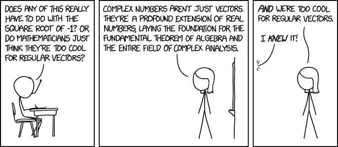

Thinking about Problems
Table of Contents
- 1. Introduction
- 1.1. Preliminary Problems
- 1.1.1. Iteration and Recursion
- 1.1.2. Fibonacci Sequence
- 1.1.3. Persian Recursion
- 1.1.4. Julia
- 1.1.5. MandelBrot
- 1.1.6. GNU Plot
- 1.1.7. Determinant??
- 1.1. Preliminary Problems
- 2. Outline
- 3. Download RevealJS
- 4. Heres a Gif
- 5. Give a brief Sketch of the project
- 6. Undecided
- 7. What we’re looking for
- 8. Appendix
1 Introduction
During preperation for this outline, an article published by the Mathematical Association of America caught my attention, in which mathematics is referred to as the Science of Patterns cite:friedMathematicsSciencePatterns2010, this I feel, frames very well the essence of the research we are looking at in this project. Mathematics, generally, is primarily concerned with problem solving (that isn’t, however, to say that the problems need to have any application1), and it’s fairly obvious that different strategies work better for different problems. That’s what we want to investigate, Different to attack a problem, different ways of thinking, different ways of framing questions.
The central focus of this investigation will be with computer algebra and the various libraries and packages that exist in the free open source 2 space to solve and visualise numeric and symbolic problems, these include:
- Programming Languages and CAS
- Julia
- SymEngine
- Maxima
- Being the oldest there is probably a lot too learn
- Julia
- Reduce
- Xcas/Gias
- Python
- Numpy
- Sympy
- Julia
- Visualisation
- Makie
- Plotly
- GNUPlot
Many problems that look complex upon initial inspection can be solved trivially by using computer algebra packages and our interest is in the different approaches that can be taken to attack each problem. Of course however this leads to the question:
Can all mathematical problems be solved by some application of some set of rules?
This is not really a question that we can answer, however, determinism with respect to systems is appears to make a very good area of investigation with respect to finding ways to deal with problems.
This is not an easy question to answer, however, while investigating this problem
Determinism
Are problems deterministic? can the be broken down into a step by step way? For example if we discover all the rules can we then simply solve all the problems?
chaos to look at patterns generally to get a deeper understanding of patterns and problems, loops and recursion generally.
To investigate different ways of thinking about math problems our investigation
laplaces demon
but then heisenberg,
but then chaos and meh.
1.1 Preliminary Problems
1.1.1 Iteration and Recursion
To illustrate an example of different ways of thinking about a problem, consider the series shown in eqref:eq:rec-ser3 :
\begin{align} g\left( k \right) &= \frac{\sqrt{2} }{2} \cdot \frac{\sqrt{2+ \sqrt{3}} }{3} \frac{\sqrt{2 + \sqrt{3 + \sqrt{4} } } }{4} \cdot \ldots \frac{\sqrt{2 + \sqrt{3 + \ldots + \sqrt{k} } } }{k} \label{eq:rec-ser} \end{align}let’s modify this for the sake of discussion:
\begin{align} h\left( k \right) = \frac{\sqrt{2} }{2} \cdot \frac{\sqrt{3 + \sqrt{2} } }{3} \cdot \frac{\sqrt{4 + \sqrt{3 + \sqrt{2} } } }{4} \cdot \ldots \cdot \frac{\sqrt{k + \sqrt{k - 1 + \ldots \sqrt{3 + \sqrt{2} } } } }{k} \label{eq:rec-ser-mod} \end{align}The function \(h\) can be expressed by the series:
\[\begin{aligned} h\left( k \right) = \prod^k_{i = 2} \left( \frac{f_i}{i} \right) \quad : \quad f_i = \sqrt{i + f_{i - 1}}, \enspace f_{1} = 1 \end{aligned}\]
Within Python, it isn’t difficult to express \(h\), the series can be expressed with recursion as shown in listing 1, this is a very natural way to define series and sequences and is consistent with familiar mathematical thought and notation. Individuals more familiar with programming than analysis may find it more comfortable to use an iterator as shown in listing 2.
################################################################################ from sympy import * def h(k): if k > 2: return f(k) * f(k-1) else: return 1 def f(i): expr = 0 if i > 2: return sqrt(i + f(i -1)) else: return 1
from sympy import * def h(k): k = k + 1 # OBOB l = [f(i) for i in range(1,k)] return prod(l) def f(k): expr = 0 for i in range(2, k+2): expr = sqrt(i + expr, evaluate=False) return expr/(k+1)
Any function that can be defined by using iteration, can always be defined via recursion and vice versa, cite:bohmReducingRecursionIteration1988,bohmReducingRecursionIteration1986 see also cite:smolarskiMath60Notes2000,IterationVsRecursion2016
there is, however, evidence to suggest that recursive functions are easier for people to understand cite:benanderEmpiricalAnalysisDebugging2000 . Although independent research has shown that the specific language chosen can have a bigger effect on how well recursive as opposed to iterative code is understood cite:sinhaCognitiveFitEmpirical1992.
The relevant question is which method is often more appropriate, generally the process for determining which is more appropriate is to the effect of:
- Write the problem in a way that is easier to write or is more appropriate for demonstration
- If performance is a concern then consider restructuring in favour of iteration
- For interpreted languages such R and Python, loops are usually faster, because of the overheads involved in creating functions cite:smolarskiMath60Notes2000 although there may be exceptions to this and I’m not sure if this would be true for compiled languages such as Julia, Java, C etc.
1.1.1.1 Some Functions are more difficult to express with Recursion in
Attacking a problem recursively isn’t always the best approach, consider the function \(g\left( k \right)\) from eqref:eq:rec-ser:
\begin{align} g\left( k \right) &= \frac{\sqrt{2} }{2} \cdot \frac{\sqrt{2+ \sqrt{3}} }{3} \frac{\sqrt{2 + \sqrt{3 + \sqrt{4} } } }{4} \cdot \ldots \frac{\sqrt{2 + \sqrt{3 + \ldots + \sqrt{k} } } }{k} \nonumber \\ &= \prod^k_{i = 2} \left( \frac{f_i}{i} \right) \quad : \quad f_{i} = \sqrt{i + f_{i+1}} \nonumber \end{align}
Observe that the difference between eqref:eq:rec-ser and eqref:eq:rec-ser-mod is
that the sequence essentially looks forward, not back. To solve using a for
loop, this distinction is a non-concern because the list can be reversed using a built-in
such as rev, reversed or reverse in Python, R and Julia
respectively, which means the same expression can be implemented.
To implement recursion however, the series needs to be restructured and this can become a little clumsy, see eqref:eq:clumsy:
\begin{align} g\left( k \right) &= \prod^k_{i = 2} \left( \frac{f_i}{i} \right) \quad : \quad f_{i} = \sqrt{\left( k- i \right) + f_{k - i - 1}} \label{eq:clumsy} \end{align}
Now the function could be performed recursively in Python in a similar
way as shown in listing 3, but it’s also significantly more confusing because the \(f\) function now has \(k\) as a parameter and this is only made significantly more complicated by the variable scope of functions across common languages used in Mathematics and Data science such as bash, Python, R and Julia (see section 1.1.1.2).
If however, the for loop approach was implemented, as shown in listing
4, the function would not significantly change, because the reversed() function can be
used to flip the list around.
What this demonstrates is that taking a different approach to simply describing this function can lead to big differences in the complexity involved in solving this problem.
from sympy import * def h(k): if k > 2: return f(k, k) * f(k, k-1) else: return 1 def f(k, i): if k > i: return 1 if i > 2: return sqrt((k-i) + f(k, k - i -1)) else: return 1
from sympy import * def h(k): k = k + 1 # OBOB l = [f(i) for i in range(1,k)] return prod(l) def f(k): expr = 0 for i in reversed(range(2, k+2)): expr = sqrt(i + expr, evaluate=False) return expr/(k+1)
1.1.1.2 Variable Scope of Nested Functions
1.1.2 Fibonacci Sequence
1.1.2.1 Computational Approach
The Fibonacci Numbers are given by:
\begin{align} F_n = F_{n-1} + F_{n-2} \label{eq:fib-def} \end{align}This type of recursive relation can be expressed in Python by using recursion, as shown in listing 5, however using this function will reveal that it is extraordinarily slow, as shown in listing 6, this is because the results of the function are not cached and every time the function is called every value is recalculated4, meaning that the workload scales in exponential as opposed to polynomial time.
The functools library for python includes the @functools.lru_cache decorator
which will modify a defined function to cache results in memory
cite:FunctoolsHigherorderFunctions, this means that the recursive function will
only need to calculate each result once and it will hence scale in polynomial
time, this is implemented in listing 7.
def rec_fib(k): if type(k) is not int: print("Error: Require integer values") return 0 elif k == 0: return 0 elif k <= 2: return 1 return rec_fib(k-1) + rec_fib(k-2)
start = time.time() rec_fib(35) print(str(round(time.time() - start, 3)) + "seconds") ## 2.245seconds
from functools import lru_cache @lru_cache(maxsize=9999) def rec_fib(k): if type(k) is not int: print("Error: Require Integer Values") return 0 elif k == 0: return 0 elif k <= 2: return 1 return rec_fib(k-1) + rec_fib(k-2) start = time.time() rec_fib(35) print(str(round(time.time() - start, 3)) + "seconds") ## 0.0seconds
start = time.time() rec_fib(6000) print(str(round(time.time() - start, 9)) + "seconds") ## 8.3923e-05seconds
Restructuring the problem to use iteration will allow for even greater performance as demonstrated by finding \(F_{10^{6}}\) in listing 8. Using a compiled language such as Julia however would be thousands of times faster still, as demonstrated in listing 9.
def my_it_fib(k): if k == 0: return k elif type(k) is not int: print("ERROR: Integer Required") return 0 # Hence k must be a positive integer i = 1 n1 = 1 n2 = 1 # if k <=2: # return 1 while i < k: no = n1 n1 = n2 n2 = no + n2 i = i + 1 return (n1) start = time.time() my_it_fib(10**6) print(str(round(time.time() - start, 9)) + "seconds") ## 6.975890398seconds
function my_it_fib(k) if k == 0 return k elseif typeof(k) != Int print("ERROR: Integer Required") return 0 end # Hence k must be a positive integer i = 1 n1 = 1 n2 = 1 # if k <=2: # return 1 while i < k no = n1 n1 = n2 n2 = no + n2 i = i + 1 end return (n1) end @time my_it_fib(10^6) ## my_it_fib (generic function with 1 method) ## 0.000450 seconds
In this case however an analytic solution can be found by relating discrete mathematical problems to continuous ones as discussed below at section .
1.1.2.2 Exponential Generating Functions
1.1.2.2.1 Motivation
Consider the Fibonacci Sequence from eqref:eq:fib-def:
\begin{align} a_{n}&= a_{n - 1} + a_{n - 2} \nonumber \\ \iff a_{n+ 2} &= a_{n+ 1} + a_n \label{eq:fib-def-shift} \end{align}from observation, this appears similar in structure to the following ordinary differential equation, which would be fairly easy to deal with:
\begin{align*} f''\left( x \right)- f'\left( x \right)- f\left( x \right)= 0 \end{align*}This would imply that \(f\left( x \right) \propto e^{mx}, \quad \exists m \in \mathbb{Z}\) because \(\frac{\mathrm{d}\left( e^x \right) }{\mathrm{d} x} = e^x\), and so by using a power series it’s quite feasable to move between discrete and continuous problems:
\begin{align*} f\left( x \right)= e^{rx} = \sum^{\infty}_{n= 0} \left[ r \frac{x^n}{n!} \right] \end{align*}1.1.2.2.2 Example
Consider using the following generating function, (the derivative of the generating function as in eqref:eq:exp-gen-def-2 and eqref:eq:exp-gen-def-3 is provided in section 1.1.2.2.3)
\begin{alignat}{2} f \left( x \right) &= \sum^{\infty}_{n= 0} \left[ a_{n} \cdot \frac{x^n}{n!} \right] &= e^x \label{eq:exp-gen-def-1} \\ f'\left( x \right) &= \sum^{\infty}_{n= 0} \left[ a_{n+1} \cdot \frac{x^n}{n!} \right] &= e^x \label{eq:exp-gen-def-2} \\ f''\left( x \right) &= \sum^{\infty}_{n= 0} \left[ a_{n+2} \cdot \frac{x^n}{n!} \right] &= e^x \label{eq:exp-gen-def-3} \end{alignat}So the recursive relation from eqref:eq:fib-def-shift could be expressed :
\begin{align*} a_{n+ 2} &= a_{n+ 1} + a_{n}\\ \frac{x^n}{n!} a_{n+ 2} &= \frac{x^n}{n!}\left( a_{n+ 1} + a_{n} \right)\\ \sum^{\infty}_{n= 0} \left[ \frac{x^n}{n!} a_{n+ 2} \right] &= \sum^{\infty}_{n= 0} \left[ \frac{x^n}{n!} a_{n+ 1} \right] + \sum^{\infty}_{n= 0} \left[ \frac{x^n}{n!} a_{n} \right] \\ f''\left( x \right) &= f'\left( x \right)+ f\left( x \right) \end{align*}Using the theory of higher order linear differential equations with constant coefficients it can be shown:
\begin{align*} f\left( x \right)= c_1 \cdot \mathrm{exp}\left[ \left( \frac{1- \sqrt{5} }{2} \right)x \right] + c_2 \mathrm{exp}\left[ \left( \frac{1 + \sqrt{5} }{2} \right)x \right] \end{align*}By equating this to the power series:
\begin{align*} f\left( x \right)&= \sum^{\infty}_{n= 0} \left[ \left( c_1\left( \frac{1- \sqrt{5} }{2} \right)^n + c_2 \cdot \left( \frac{1+ \sqrt{5} }{2} \right)^n \right) \cdot \frac{x^n}{n} \right] \end{align*}Now given that:
\begin{align*} f\left( x \right)= \sum^{\infty}_{n= 0} \left[ a_n \frac{x^n}{n!} \right] \end{align*}We can conclude that:
\begin{align*} a_n = c_1\cdot \left( \frac{1- \sqrt{5} }{2} \right)^n + c_2 \cdot \left( \frac{1+ \sqrt{5} }{2} \right)^n \end{align*}By applying the initial conditions:
\begin{align*} a_0= c_1 + c_2 \implies c_1= - c_2\\ a_1= c_1 \left( \frac{1+ \sqrt{5} }{2} \right) - c_1 \frac{1-\sqrt{5} }{2} \implies c_1 = \frac{1}{\sqrt{5} }\\ \therefore c_1 = \frac{1}{\sqrt{5}} \text{and} c_2 = -\frac{1}{\sqrt{5}} \end{align*}And so finally we have the solution to the Fibonacci Sequence ref:eq:fib-def-shift:
\begin{align} a_n &= \frac{1}{\sqrt{5} } \left[ \left( \frac{1+ \sqrt{5} }{2} \right)^n - \left( \frac{1- \sqrt{5} }{2} \right)^n \right] \nonumber \\ &= \frac{\varphi^n - \psi^n}{\sqrt{5} } \nonumber\\ &=\frac{\varphi^n - \psi^n}{\varphi - \psi} \label{eq:fib-sol} \end{align}where:
- \(\varphi = \frac{1+ \sqrt{5} }{2} \approx 1.61\ldots\)
- \(\psi = 1-\varphi = \frac{1- \sqrt{5} }{2} \approx 0.61\ldots\)
1.1.2.2.3 Derivative of the Exponential Generating Function
Differentiating the exponential generating function has the effect of shifting the sequence once the left: cite:lehmanReadingsMathematicsComputer2010
\begin{align} f\left( x \right) &= \sum^{\infty}_{n= 0} \left[ a_n \frac{x^n}{n!} \right] \label{eq:exp-pow-series} \\ f'\left( x \right) &= \frac{\mathrm{d} }{\mathrm{d} x}\left( \sum^{\infty}_{n= 0} \left[ a_n \frac{x^n}{n!} \right] \right) \nonumber \\ &= \frac{\mathrm{d}}{\mathrm{d} x} \left( a_0 \frac{x^0}{0!} + a_1 \frac{x^1}{1!} + a_2 \frac{x^2}{2!}+ a_3 \frac{x^3}{3! } + \ldots + \frac{x^k}{k!} \right) \nonumber \\ &= \sum^{\infty}_{n= 0} \left[ \frac{\mathrm{d} }{\mathrm{d} x}\left( a_n \frac{x^n}{n!} \right) \right] \nonumber \\ &= \sum^{\infty}_{n= 1} {\left[{ \frac{a_n}{{\left({ n- 1 }\right)!}} } x^{n- 1} \right]} \nonumber \\ \implies f'(x) &= \sum^{\infty}_{n= 0} {\left[{ \frac{x^n}{n!}a_{n+ 1} }\right]} \label{eq:exp-pow-series-sol} \end{align}This in fact is true for all \(k \ge 0\) and can be proven by induction.
If \(f(x) = \sum_{n=0}^\infty\frac{a_{n}\cdot x^n}{n!}\), prove $f(k)\left(x\right) = ∑n=0^∞\frac{an+k⋅ xn}{n!} \quad \text{for}~k ≥ 0$
Test \(k=0\)
Therefore LHS = RHS, so \(k=0\) is true
Now assume true for all k, i.e. $f(k)\left(x\right) = ∑n=0^∞\frac{an+k⋅ xn}{n!}$
Using this assumption, prove for the next element $k+1$
We need $f(k+1)(x) = ∑n=0^∞\frac{an+k+1⋅ xn}{n!}$
1.1.2.2.4 Differential Equations
An equation of the form:
\begin{align} \sum^{k}_{n=0} \left[ c_{i} \cdot f^{(n)}(x) \right] = 0 \label{eq:hom-ode} \end{align}is said to be a homogenous linear ODE:
- Linear
- because the equation is linear with respect to \(f(x)\)
- Ordinary
- because there are no partial derivatives (e.g. \(\frac{\partial }{\partial x}{\left({ f{\left({ x }\right)} }\right)}\) )
- Differential
- because the derivates of the function are concerned
- Homogenous
- because the RHS is 0
- A non-homogeous equation would have a non-zero RHS
There will be \(k\) solutions to a \(k^{\mathrm{th}}\) order linear ODE, each may be summed to produce a superposition which will also be a solution to the equation, this will be considered as the desired complete solution. These \(k\) solutions will be in one of two forms:
- \(f(x)=c_{i} \cdot e^{m_{i}x}\)
- \(f(x)=c_{i} \cdot x^{j}\cdot e^{m_{i}x}\)
where:
- \(\sum^{k}_{i=0}\left[ c_{i}m^{k-i} \right] = 0\)
- This is referred to the characteristic equation of the recurrence relation or ODE cite:levinSolvingRecurrenceRelations2018
- \(\exists i,j \in \mathbb{Z}^{+} \cap \left[0,k\right]\)
- These are often referred to as repeated roots cite:levinSolvingRecurrenceRelations2018,zillMatrixExponential2009 with a multiplicity corresponding to the number of repetitions of that root
An example of a recurrence relation with all unique roots is the fibonacci sequence, as described in section 1.1.2.2.2.
Consider the following linear recurrence relation:
\begin{align} \sum^{\infty}_{n= 0} \left[ c_i \cdot a_n \right] = 0, \quad \exists c \in \mathbb{R}, \enspace \forall iRecall from eqref:eq:hom-ode the homogeneous differential equation:
\begin{align} \sum^{k}_{i= 0} {\left[{ c_i f^{{\left({ k }\right)} } } {\left({ x }\right)} \right]} \label{eq:exp-gen-def-proof} &= 0 \end{align}Now assume that the solution exists and all roots of the characteristic polynomial are unique (i.e. the solution is of the form \(f{\left({ x }\right)} \propto e^{m_i x}: \quad m_i \neq m_j \forall i\neq j\)), this implies that :
\begin{align} f{\left({ x }\right)} = \sum^{k}_{i= 0} {\left[{ k_i e^{m_i x} }\right]}, \quad \exists m,k \in \mathbb{C} \nonumber \end{align}This can be re-expressed in terms of the exponential power series. Doing this allows us to relate the solution of the function \(f{\left({ x }\right)}\) back to a solution of the sequence \(a_n\), (see section for a de
\begin{align} \sum^{k}_{i= 0} {\left[{ k_i e^{m_i x} }\right]} &= \sum^{k}_{i= 0} {\left[{ k_i \sum^{\infty}_{n= 0} \frac{{\left({ m_i x }\right)}^n}{n!} }\right]} \nonumber \\ &= \sum^{k}_{i= 0} \sum^{\infty}_{n= 0} k_i m_i^n \frac{x^n}{n!} \nonumber\\ &= \sum^{\infty}_{n= 0} \sum^{k}_{i= 0} k_i m_i^n \frac{x^n}{n!} \nonumber \\ &= \sum^{\infty}_{n= 0} {\left[{ \frac{x^n}{n!} \sum^{k}_{i=0} {\left[{ k_im^n_i }\right]} }\right]}, \quad \exists k_i \in \mathbb{C}, \enspace \forall i \in \mathbb{Z}^+\cap {\left[{ 1, k }\right]} \label{eq:unique-root-sol-power-series-form} \end{align}Recall the exponential generating function gives f{\left({ x }\right)} &= ∑∞n= 0 {\left[{ \frac{x^n}{n!} an }\right]. Equating this to eqref:eq:unique-root-sol-power-series-form will give:
\begin{align} f{\left({ x }\right)} &= \sum^{\infty}_{n= 0} {\left[{ \frac{x^n}{n!} a_n }\right]} \nonumber &= \sum^{\infty}_{n= 0} {\left[{ \frac{x^n}{n!} \sum^{k}_{i=0} {\left[{ k_im^n_i }\right]} }\right]} \nonumber \\ \implies a_n &= \sum^{k}_{n= 0} {\left[{ k_im_i^n }\right]} \nonumber \\ \nonumber \square \end{align}This can be verified by the fibonacci sequence as shown in section 1.1.2.2.2, the solution to the characteristic equation is \(m_1 = \varphi, m_2 = {\left({ 1-\varphi }\right)}\) and the corresponding solution to the linear ODE and recursive relation are:
\begin{alignat}{4} f{\left({ x }\right)} &= &c_1 e^{\varphi x} + &c_2 e^{{\left({ 1-\varphi }\right)} x}, \quad &\exists c_1, c_2 \in \mathbb{R} \subset \mathbb{C} \nonumber \\ \iff a_n &= &k_1 n^{\varphi} + &k_2 n^{1- \varphi}, &\exists k_1, k_2 \in \mathbb{R} \subset \mathbb{C} \nonumber \end{alignat}We have had a look at distinct roots, but what about repeated roots? Consider the following recurrence relation:
\begin{align} a_n - 10a_{n+ 1} + 25a_{n+ 2}&= 0 \label{eq:hom-repeated-roots-recurrence} \\ \implies \sum^{\infty}_{n= 0} {\left[{ a_n \frac{x^n}{n!} }\right]} - 10 \sum^{\infty}_{n= 0} {\left[a_{n+1}{ \frac{x^n}{n!} }\right]} + 25 \sum^{\infty}_{n= 0 } {\left[{ a_{n+ 2 }\frac{x^n}{n!} }\right]}&= 0 \nonumber \end{align}Again, repeating the same process we did for distinct roots, we get:
\begin{align} f''{\left({ x }\right)}- 10f'{\left({ x }\right)}+ 25f{\left({ x }\right)}= 0 \label{eq:rep-roots-func-ode} \end{align}By implementing the already well-established theory of linear ODE’s, the characteristic equation for eqref:eq:rep-roots-func-ode can be expressed as:
\begin{align} m^2- 10m+ 25 = 0 \nonumber \\ {\left({ m- 5 }\right)}^2 = 0 \nonumber \\ m= 5 \label{eq:rep-roots-recurrence-char-sol} \end{align}Herein lies a complexity, in order to solve this, the solution produced from eqref:eq:rep-roots-recurrence-char-sol can be used with the Reduction of Order technique to produce a solution that will be of the form .
\begin{align} f{\left({ x }\right)}= c_1e^{5x} + c_2 x e^{5x} \label{eq:rep-roots-ode-sol} \end{align}eqref:eq:rep-roots-ode-sol can be expressed in terms of the exponential power series. Similar to that of distinct roots, doing this will allow us to relate the solution for eqref:eq:rep-roots-ode-sol back to the generating function. Effectively giving us a way to find the solution to the recurrence relation eqref:eq:hom-repeated-roots-recurrence.
To do this, let’s take a look at the following identity:
\begin{align} x^ke^x &= \sum^{\infty}_{n= 0} {\left[{ \frac{x^n}{{\left({ n- k }\right)}!} }\right]}, \quad \exists k \in \mathbb{Z}^+ \label{eq:uniq-roots-pow-series-ident} \end{align}Proof Consider the function \(f(x) = xe^x\). Using the taylor series formula we get the following:
\begin{align*} xe^x &= 0+\frac{1}{1!}x+\frac{2}{2!}x^2+\frac{3}{3!}x^3+\frac{4}{4!}x^4+\frac{5}{5!}x^5+\dots\\ &= \sum_{n=0}^\infty \frac{nx^n}{n!}\\ &= \sum_{n=1}^\infty \frac{x^n}{(n-1)!} \end{align*}Similarly, \(f(x) = x^2e^x\) will give:
\begin{align*} x^2e^x &= \frac{0}{0!} + \frac{0x}{1!} + \frac{2x^2}{2!} + \frac{6x^3}{3!} + \frac{12x^4}{4!} + \frac{20x^5}{5!} + \dots\\ &= \frac{2\cdot 1x^2}{2!} + \frac{3\cdot 2 x^3}{3!} + \frac{4\cdot 3x^4}{4!} + \frac{5\cdot 4 x^5}{5!} + \dots\\ &= \sum_{n=2}^\infty \frac{n(n-1)x^n}{n!}\\ &= \sum_{n=2}^\infty \frac{x^n}{(n-2)!} \end{align*}If we continue this on, we get:
\begin{align*} x^ke^x = \sum_{n=k}^\infty \frac{x^n}{(n-k)!} \quad \text{for}~k \ge 0 \end{align*}
To verify, let’s prove this by induction.
Prove \(f(x) = x^ke^x = \sum_{n=k}^\infty\frac{x^n}{(n-k)!}\) \text{for} \(k \ge 0\)
Test \(k=0\)
\begin{align*} LHS &= x^0e^x = e^x\\ RHS &= \sum_{n=0}^\infty \frac{x^n}{n!} = e^x\\ \end{align*}
Therefore LHS = RHS, so \(k=0\) is true
Now assume true for all k, i.e. $xk ex = ∑n=k^∞\frac{x^n}{(n-k)!}$
Using this assumption, prove for the next element $k+1$
We need $xk+1ex = ∑n=k+1^∞\frac{x^n}{(n-(k+1))!}$
So by mathematical induction \(f(x) = x^ke^x = \sum_{n=k}^\infty\frac{x^n}{(n-k)!}\) \text{for} \(k \ge 0\)
Moving on, by applying identity eqref:eq:uniq-roots-pow-series-ident to equation eqref:eq:rep-roots-ode-sol
\begin{align} \implies f{\left({ x }\right)} &= \sum^{\infty}_{n= 0} {\left[{ c_1 \frac{{\left({ 5x }\right)}^n}{n!} }\right]} + \sum^{\infty}_{n= 0} {\left[{ c_2 \frac{{\left({ n 5x }\right)^n}}{n{\left({ n-1 }\right)}!} }\right]} \nonumber \\ &= \sum^{\infty}_{n= 0} {\left[{ \frac{x^n}{n!} {\left({ c_{1}5^n + c_2 n 5^n }\right)} }\right]} \nonumber \end{align}Given the definition of the exponential generating function from eqref:eq:exp-gen-def-1
\begin{align} f{\left({ x }\right)}&= \sum^{\infty}_{n= 0} {\left[{ a_n \frac{x^n}{n!} }\right]} \nonumber \\ \iff a_n &= c_{1}5^n + c_2n_5^n \nonumber \\ \nonumber \ \nonumber \\ \square \nonumber \end{align}In order to prove the the solution for a \(k^{\mathrm{th}}\) order recurrence relation with \(k\) repeated
Consider a recurrence relation of the form:
\begin{align} \sum^{k}_{n= 0} {\left[{ c_i a_n }\right]} = 0 \nonumber \\ \implies \sum^{\infty}_{n= 0} \sum^{k}_{i= 0} c_i a_n \frac{x^n}{n!} = 0 \nonumber \\ \sum^{k}_{i= 0} \sum^{\infty}_{n= 0} c_i a_n \frac{x^n}{n!} \nonumber \end{align}Using the value of the generating function eqref:eq:exp-gen-def-1 and assuming that it corresponds to a charecteristic polynomial with only 1 root of multiplicity \(k\), the solution would hence be of the form:
\begin{align} & \sum^{k}_{i= 0} {\left[{ c_i m^i }\right]} = 0 \wedge m=B, \enspace \exists! B \in \mathbb{C} \nonumber \\ \implies f{\left({ x }\right)}&= \sum^{k}_{i= 0} {\left[{ x^i A_i e^{mx} }\right]}, \quad \exists A \in \mathbb{C}^+, \enspace \forall i \in {\left[{ 1,k }\right]} \cap \mathbb{N} \label{eq:sol-rep-roots-ode} \\ \end{align}Recall the following power series identity:
\begin{align} x^k e^x = \sum^{\infty}_{n= k} {\left[{ \frac{x^n}{{\left({ n- k }\right)}!} }\right]} \nonumber \end{align}By applying this to eqref:eq:sol-rep-roots-ode :
\begin{align} f{\left({ x }\right)}&= \sum^{k}_{i= 0} {\left[{ A_i \sum^{\infty}_{n= i} {\left[{ \frac{{\left({ x m }\right)}^n}{{\left({ n- i }\right)}!} }\right]} }\right]} \nonumber \\ &= \sum^{\infty}_{n= i} {\left[{ \sum^{k}_{i=0} {\left[{ \frac{x^n}{n!} \frac{n!}{{\left({ n- i }\right)}} A_i m^n }\right]} }\right]} \nonumber \\ &= \sum^{\infty}_{n= 0} {\left[{ \frac{x^n}{n!} \sum^{k}_{i=0} {\left[{ \frac{n!}{{\left({ n- i }\right)}} A_i m^n }\right]} }\right]} \label{eq:char-poly} \end{align}Equating eqref:eq:char-poly to the generating function \(f{\left({ x }\right)}&= \sum^{\infty}_{n= 0} {\left[{ a_n \frac{x^n}{n!} }\right]}\)
\begin{align} \implies a_n &= \sum^{k}_{i= 0} {\left[{ A_i \frac{n!}{{\left({ n- i }\right)}!} m^n }\right]} \nonumber \\ &= \sum^{k}_{i= 0} {\left[{ m^n A_i \prod_{0}^{k} {\left[{ n- {\left({ i- 1 }\right)} }\right]} }\right]} \nonumber\\ &= \sum^{k}_{i= 0} {\left[{ A_i^* m^n n^i }\right]}, \quad \exists A_i \in \mathbb{C}, \enspace \forall i\leqk \in \mathbb{Z}^+ \nonumber \\ \square \nonumber \end{align}#+BEGINCOMMENT
1.1.2.3 Fibonacci Sequence and the Golden Ratio
The Fibonacci Sequence is actually very interesting, observe that the ratios of the terms converge to the Golden Ratio:
\begin{align*} F_n &= \frac{\varphi^n-\psi^n}{\varphi-\psi} = \frac{\varphi^n-\psi^n}{\sqrt 5} \\ \iff \frac{F_{n+1}}{F_n} &= \frac{\varphi^{n+ 1} - \psi^{n+ 1}}{\varphi^{n} - \psi^{n}} \\ \iff \lim_{n \rightarrow \infty}\left[ \frac{F_{n+1}}{F_n} \right] &= \lim_{n \rightarrow \infty}\left[ \frac{\varphi^{n+ 1} - \psi^{n+ 1}}{\varphi^{n} - \psi^{n}} \right] \\ &= \frac{\varphi^{n+ 1} -\lim_{n \rightarrow \infty}\left[ \psi^{n + 1} \right] }{\varphi^{n} - \lim_{n \rightarrow \infty}\left[ \psi^n \right] } \\ \text{because $\mid \psi \mid < 0$ $n \rightarrow \infty \implies \psi^{n} \rightarrow 0$:} \\ &= \frac{\varphi^{n+ 1} - 0}{\varphi^{n} - 0} \\ &= \varphi \end{align*}We’ll come back to this later on when looking at spirals and fractals.
This can also be shown by using analysis, let $L=limn → ∞ \left[ \frac{Fn+1}{Fn} \right], then:
\begin{align}
L&= \frac{Fn+ 1 }{fn} \label{eq:fib-r-def}
&= \frac{Fn + Fn- 1 }{Fn}
&= 1 + \frac{Fn - 1 }{Fn}
\ldots
\text{by monotone convergence}
L2 - L - 1 = 0
\implies L = φ
\end{aligned}
#+ENDCOMMENT
1.1.3 Persian Recursion
Although some recursive problems are a good fit for mathematical thinking such as the Fibonacci Sequence discussed in section 1.1.2.2 other problems can be be easily interpreted computationally but they don’t really carry over to any mathematical perspective, one good example of this is the persian recursion, which is a simple procedure developed by Anne Burns in the 90s cite:burnsPersianRecursion1997 that produces fantastic patterns upon feedback and iteration
The procedure begins with an empty or zero square matrix with sides \(2^{n}+1, \enspace \exists n\in \mathbb{Z}^{+}\) and some value given to the edges:
- Decide on some four variable function with a finite domain and range of size \(m\), for the example shown at listing 10 and in figure 1 the function \(f(w,x,y,z)=(w+x+y+z) \mod m\) was chosen.
- Assign this value to the centre row and centre column of the matrix
- Repeat this for each newly enclosed subsmatrix.
This can be implemented computationally by defining a function that:
- takes the index of four corners enclosing a square sub-matrix of some matrix as input,
- proceeds only if that square is some positive real value.
- colours the centre column and row corresponding to a function of those four values
- then calls itself on the corners of the four new sub-matrices enclosed by the coloured row and column
This is demonstrated in listing 10 with python and produces the output shown in figures 1, various interesting examples are provided in the appendix at section 8.1.
By mapping the values to colours, patterns emerge, this emergence of complex patterns from simple rules is a well known and general phenomena that occurs in nature cite:EmergenceHowStupid2017,kivelsonDefiningEmergencePhysics2016, as a matter of fact:
One of the suprising impacts of fractal geometry is that in the presence of complex patterns there is a good chance that a very simple process is responsible for it.
Many patterns that occur in nature can be explained by relatively simple rules that are exposed to feedback and iteration , this is a centreal theme of Alan Turing’s The Chemical Basis For Morphogenesis cite:turingChemicalBasisMorphogenesis1952 which we hope to look in the course of this research.
%matplotlib inline
# m is colours
# n is number of folds
# Z is number for border
# cx is a function to transform the variables
def main(m, n, z, cx):
import numpy as np
import matplotlib.pyplot as plt
# Make the Empty Matrix
mat = np.empty([2**n+1, 2**n+1])
main.mat = mat
# Fill the Borders
mat[:,0] = mat[:,-1] = mat[0,:] = mat[-1,:] = z
# Colour the Grid
colorgrid(0, mat.shape[0]-1, 0, mat.shape[0]-1, m)
# Plot the Matrix
plt.matshow(mat)
# Define Helper Functions
def colorgrid(l, r, t, b, m):
# print(l, r, t, b)
if (l < r -1):
## define the centre column and row
mc = int((l+r)/2); mr = int((t+b)/2)
## Assign the colour
main.mat[(t+1):b,mc] = cx(l, r, t, b, m)
main.mat[mr,(l+1):r] = cx(l, r, t, b, m)
## Now Recall this function on the four new squares
#l r t b
colorgrid(l, mc, t, mr, m) # NW
colorgrid(mc, r, t, mr, m) # NE
colorgrid(l, mc, mr, b, m) # SW
colorgrid(mc, r, mr, b, m) # SE
def cx(l, r, t, b, m):
new_col = (main.mat[t,l] + main.mat[t,r] + main.mat[b,l] + main.mat[b,r]) % m
return new_col.astype(int)
main(5,6, 1, cx)
Figure 1: Output produced by listing 10 with 6 folds
1.1.4 Julia
1.1.4.1 Motivation
Consider the iterative process \(x \rightarrow x^{2}, \enspace x \in \mathbb{R}\), for values of \(x>1\) this process will diverge and for \(x<1\) it will converge.
Now Consider the iterative process \(z \rightarrow z^{2}, \enspace z \in \mathbb{C}\), for values of \(\left\lvert z \right\rvert >1\) this process will diverge and for \(\left\lvert z \right\rvert <1\) it will converge.
Although this seems trivial this can be generalised.
Consider:
- The complex plane for \(\left\lvert z \right\rvert \leq 1\)
- Some function \(f_{c}(z) = z^{2} + c, \quad c \leq 1 \in \mathbb{C}\) that can be used to iterate with
Every value on that plane will belong to one of the two following sets
- \(P_{c}\)
- The set of values on the plane that converge to zero (prisoners)
- Define \(Q^{(k)}_{c}\) to be the the set of values confirmed as prisoners after \(k\) iterations of \(f_{c}\)
- this implies \(\lim_{k \rightarrow \infty} \left[ Q^{(k)}_{c} \right] = P_{c}\)
- \(E_{c}\)
- The set of values on the plane that tend to \(\infty\) (escapees)
In the case of \(f_{0}(z) = z^{2}\) all values \(\left\lvert z \right \rvert \leq 1\) are bounded with \(\left\lvert z \right \rvert = 1\) being an unstable stationary circle, but let’s investigate what happens for different iterative functions like \(f_{1}(z) = z^{2} - 1\), despite how trivial this seems at first glance.
1.1.4.2 Plotting the Sets ATTACH
Although the convergence of values may appear simple at first, we’ll implement a strategy to plot the prisoner and escape sets on the complex plane.
Because this involves iteration and Python is a little slow, We’ll denote complex values as a vector5 and define the operations as described in listing 11.6
To implement this test we’ll consider a function called escape_test that applies an
iteration (in this case \(f_{0}: z \rightarrow z^{2}\)) until that value diverges or converges.
While iterating with \(f_{c}\) once \(\left\lvert z \right\rvert >
\mathrm{max}\left(\left\{c, 2\}\right)\), the value must diverge because
\(\left\lvert c \rvert\right \leq 1\), so rather than record whether or not the
value converges or diverges, the escape_test can instead record the number of
iterations \((k)\) until the value has crossed that boundary and this will provide
a measurement of the rate of divergence.
Then the escape_test function can be mapped over a matrix, where each element
of that matrix is in turn mapped to a point on the cartesian plane, the resulting matrix
can be visualised as an image 7, this is implemented in listing
12 and the corresponding output shown in .
with respect to listing 12:
- Observe that the
magnitudefunction wasn’t used:- This is because a
sqrtis a costly operation and comparing two squares saves an operation
- This is because a
from math import sqrt
def magnitude(z):
# return sqrt(z[0]**2 + z[1]**2)
x = z[0]
y = z[1]
return sqrt(sum(map(lambda x: x**2, [x, y])))
def cAdd(a, b):
x = a[0] + b[0]
y = a[1] + b[1]
return [x, y]
def cMult(u, v):
x = u[0]*v[0]-u[1]*v[1]
y = u[1]*v[0]+u[0]*v[1]
return [x, y]
%matplotlib inline
%config InlineBackend.figure_format = 'svg'
import numpy as np
def escape_test(z, num):
''' runs the process num amount of times and returns the count of
divergence'''
c = [0, 0]
count = 0
z1 = z #Remember the original value that we are working with
# Iterate num times
while count <= num:
dist = sum([n**2 for n in z1])
distc = sum([n**2 for n in c])
# check for divergence
if dist > max(2, distc):
#return the step it diverged on
return count
#iterate z
z1 = cAdd(cMult(z1, z1), c)
count+=1
#if z hasn't diverged by the end
return num
p = 0.25 #horizontal, vertical, pinch (zoom)
res = 200
h = res/2
v = res/2
pic = np.zeros([res, res])
for i in range(pic.shape[0]):
for j in range(pic.shape[1]):
x = (j - h)/(p*res)
y = (i-v)/(p*res)
z = [x, y]
col = escape_test(z, 100)
pic[i, j] = col
import matplotlib.pyplot as plt
plt.axis('off')
plt.imshow(pic)
# plt.show()
This is precisely what we expected, but this is where things get interesting, consider now the result if we apply this same procedure to \(f_{1}: z \rightarrow z^{2} - 1\) or something arbitrary like \(f_{\frac{1}{4} + \frac{i}{2}}: z \rightarrow z^{2} + (\frac{1}{4} + \frac{i}{2})\), the result is something particularly unexpected, as shown in figures 2 and 3.
Figure 2: Circle of Convergence for \(f_{0}: z \rightarrow z^{2} - 1\)
Figure 3: Circle of Convergence for \(f_{\frac{1}{4} + \frac{i}{2}}: z \rightarrow z^{2} + \frac{1}{4} + \frac{i}{2}\)
Now this is particularly interesting, to investigate this further consider the more general function \(f_{0.8 e^{\pi i \tau}}: z \rightarrow z^{2} + 0.8 e^{\pi i \tau}, \enspace \tau \in \mathbb{R}\), many fractals can be generated using this set by varying the value of \(\tau\)8.
Python is too slow for this, but the Julia programming language, as a
compiled language, is significantly faster and has the benefit of treating
complex numbers as first class citizens, these images can be generated in
Julia in a similar fashion as before, with the specifics shown in listing
13. The GR package appears to be the best plotting library
performance wise and so was used to save corresponding images to disc, this is
demonstrated in listing 14 where 1200 pictures at a 2.25 MP resolution were produced. 9
A subset of these images can be combined using ImageMagick and bash to
create a collage, ImageMagick can also be used to produce a gif but it often
fails and a superior approach is to use ffmpeg, this is demonstrated in
listing 15, the collage is shown in figure 4 and a corresponding
animation is available online10].
# * Define the Julia Set """ Determine whether or not a value will converge under iteration """ function juliaSet(z, num, my_func) count = 1 # Remember the value of z z1 = z # Iterate num times while count ≤ num # check for divergence if abs(z1)>2 return Int(count) end #iterate z z1 = my_func(z1) # + z count=count+1 end #if z hasn't diverged by the end return Int(num) end # * Make a Picture """ Loop over a matrix and apply apply the julia-set function to the corresponding complex value """ function make_picture(width, height, my_func) pic_mat = zeros(width, height) zoom = 0.3 for i in 1:size(pic_mat)[1] for j in 1:size(pic_mat)[2] x = (j-width/2)/(width*zoom) y = (i-height/2)/(height*zoom) pic_mat[i,j] = juliaSet(x+y*im, 256, my_func) end end return pic_mat end
# * Use GR to Save a Bunch of Images ## GR is faster than PyPlot using GR function save_images(count, res) try mkdir("/tmp/gifs") catch end j = 1 for i in (1:count)/(40*2*π) j = j + 1 GR.imshow(make_picture(res, res, z -> z^2 + 0.8*exp(i*im*9/2))) # PyPlot uses interpolation = "None" name = string("/tmp/gifs/j", lpad(j, 5, "0"), ".png") GR.savefig(name) end end save_images(1200, 1500) # Number and Res
# Use montage multiple times to get recursion for fun montage (ls *png | sed -n '1p;0~600p') 0a.png montage (ls *png | sed -n '1p;0~100p') a.png montage (ls *png | sed -n '1p;0~50p') a.png # Use ImageMagick to Produce a gif (unreliable) convert -delay 10 *.png 0.gif # Use FFMpeg to produce a Gif instead ffmpeg \ -framerate 60 \ -pattern_type glob \ -i '*.png' \ -r 15 \ out.mov
{kind=link}
1.1.5 MandelBrot
Investigating these fractals, a natural question might be whether or not any given \(c\) value will produce a fractal that is an open disc or a closed disc.
So pick a value \(\left\lvert \gamma \right \rvert < 1\) in the complex plane and use it to produce the julia set \(f_{\gamma}\), if the corresponding prisoner set \(P\) is closed we this value is defined as belonging to the Mandelbrot set.
It can be shown (and I intend to show it generally), that this set is equivalent to re-implementing the previous strategy such that \(z \rightarrow z^{2} + z_{0}\) where \(z_{0}\) is unchanging.
This strategy is implemented in listing
%matplotlib inline
%config InlineBackend.figure_format = 'svg'
def mandelbrot(z, num):
''' runs the process num amount of times and returns the count of
divergence'''
count = 0
# Define z1 as z
z1 = z
# Iterate num times
while count <= num:
# check for divergence
if magnitude(z1) > 2.0:
#return the step it diverged on
return count
#iterate z
z1 = cAdd(cMult(z1, z1),z)
count+=1
#if z hasn't diverged by the end
return num
import numpy as np
p = 0.25 # horizontal, vertical, pinch (zoom)
res = 200
h = res/2
v = res/2
pic = np.zeros([res, res])
for i in range(pic.shape[0]):
for j in range(pic.shape[1]):
x = (j - h)/(p*res)
y = (i-v)/(p*res)
z = [x, y]
col = mandelbrot(z, 100)
pic[i, j] = col
import matplotlib.pyplot as plt
plt.imshow(pic)
# plt.show()
This is however fairly underwhelming, by using a more powerful language a much larger image can be produced, in Julia producing a 4 GB, 400 MP image will take about 10 minutes, this is demonstrated in listing and the corresponding FITS image is available-online.11
function mandelbrot(z, num, my_func) count = 1 # Define z1 as z z1 = z # Iterate num times while count ≤ num # check for divergence if abs(z1)>2 return Int(count) end #iterate z z1 = my_func(z1) + z count=count+1 end #if z hasn't diverged by the end return Int(num) end function make_picture(width, height, my_func) pic_mat = zeros(width, height) for i in 1:size(pic_mat)[1] for j in 1:size(pic_mat)[2] x = j/width y = i/height pic_mat[i,j] = mandelbrot(x+y*im, 99, my_func) end end return pic_mat end using FITSIO function save_picture(filename, matrix) f = FITS(filename, "w"); # data = reshape(1:100, 5, 20) # data = pic_mat write(f, matrix) # Write a new image extension with the data data = Dict("col1"=>[1., 2., 3.], "col2"=>[1, 2, 3]); write(f, data) # write a new binary table to a new extension close(f) end # * Save Picture #------------------------------------------------------------ my_pic = make_picture(20000, 20000, z -> z^2) 2000^2 is 4 GB save_picture("/tmp/a.fits", my_pic)
1.1.6 GNU Plot
Another approach to visualise this set is by creating a 3d surface plot where the z-axis is mapped to the time taken until divergence, this can be acheived by using gnuplot as demonstrated in listing 17.12
complex(x,y) = x*{1,0}+y*{0,1}
mandelbrot(x,y,z,n) = (abs(z)>2.0 || n>=200) ? \
n : mandelbrot(x,y,z*z+complex(x,y),n+1)
set xrange [-2:2]
set yrange [-2:2]
set logscale z
set isosample 240
set hidden3d
set contour
splot mandel(x,y,{0,0},0) notitle
complex(x,y) = x*{1,0}+y*{0,1}
julia(x,y,z,n) = (abs(z)>2.0 || k>=200) ? \
k : julia(x,y,z*z+complex(x,y),n+1)
set xrange [-1.5:1.5]
set yrange [-1.5:1.5]
set logscale z
set isosample 150
set hidden3d
set contour
a= 0.25
b= 0.75
splot mandel(a,b,complex(x,y),0) notitle
GNU Plot can also make excellent 2d renditions of fractals, an example of how to perform this can be found on Rosetta Code cite:MandelbrotSetRosetta and is demonstrated in listing 19.
R = 2
k = 100
complex (x, y) = x * {1, 0} + y * {0, 1}
mandelbrot (z, z0, n) = n == k || abs (z) > R ? n : mandelbrot (z ** 2 + z0, z0, n + 1)
set samples 200
set isosamples 200
set pm3d map
set size square
splot [-2 : 2] [-2 : 2] mandelbrot (complex (0, 0), complex (x, y), 0) notitle
1.1.7 Determinant??
2 Outline
- Intro Prob
- Variable Scope
- Problem Showing Recursion
- All Different Methods
- Discuss all Different Methods
- Discuss Vectorisation
- Is this needed in Julia
- Comment on Faster to go column Wise
- All Different Methods
- Discuss Loops
- Show Rug
- Fibonacci
- The ratio of fibonacci converges to φ
- Golden Ratio
- If you make a rectangle with the golden ratio you can cut it up under recursion to get another one, keep doing this and eventually a logarithmic spiral pops out, also the areas follow a fibonacci sequence.
- Look at the spiral of nautilus shells
- Discuss isomorphisms for recursive Relations
- Jump to Lorenz Attractor
- Now Talk about Morphogenesis
- Fractals
- Many Occur in Nature
- Mountain Ranges, compare to MandelBrot
- Sun Flowers
- Show the golden Ratio
- Fractals are all about recursion and iteration, so this gives me an excuse to look at them
- Show MandelBrot
- Python
- Sympy Slow
- Numpy Fast
- Julia brings Both Benefits
- Show Large MandelBrot
- Show Julia Set
- Show Julia Set Gif
- Python
- Show MandelBrot
- Many Occur in Nature
- Things I’d like to show
- Simulate stripes and animal patterns
- Show some math behind spirals in Nautilus Shells
- Golden Rectangle
- Throw in some recursion
- Watch the spiral come out
- Record the areas and show that they are Fibonacci
- That the ratio of Fibonacci Converges to Phi
- Any Connection to the Reimann Sphere
- Lorrenz Attractor
- How is this connected to the lorrenz attractor
- What are the connections between discrete iteration and continuous systems such as the julia set and the lorrenz attractor
- Things I’d like to Try (in order to see different ways to approach Problems)
- Programming Languages and CAS
- Julia
- SymEngine
- Maxima
- Julia
- Julia
- Visualisation
- Makie
- Plotly
- GNUPlot
- Programming Languages and CAS
- Open Questions:
- can we simulate animal patterns
- can we simulate leaves
- can we show that the gen func deriv 1.1.2.2.3
- can we prove homogenous recursive relation
- I want to look at the lorrenz attractor
- when partiles are created by the the LHC, do they follow a fractal like pattern?
- Create a Fractal Landscape, does this resemble things seen in nautre?
- Can I write an algorighm to build a tree in the winter?
- Can I develop my own type of persian recursion?
- Show the relationship between the golden ratio and the logarithmic spiral.
- and show that the fibonacci numbers pop out as area
- Prove this
- and show that the fibonacci numbers pop out as area
- Is there any relationship between the Cantor Prisoner set and the Julia Sets?
- Work with Matt to investigate Julia Sets for Quaternion
3 Download RevealJS
So first do M-x package-install ox-reveal then do M-x load-library and then look for ox-reveal
(load "/home/ryan/.emacs.d/.local/straight/build/ox-reveal/ox-reveal.el")
Download Reveal.js and put it in the directory as ./reveal.js, you can do that with something like this:
# cd /home/ryan/Dropbox/Studies/2020Spring/QuantProject/Current/Python-Quant/Outline/ wget https://github.com/hakimel/reveal.js/archive/master.tar.gz tar -xzvf master.tar.gz && rm master.tar.gz mv reveal.js-master reveal.js
Then just do C-c e e R R to export with RevealJS as opposed to PHP you won’t need a fancy server, just open it in the browser.
4 Heres a Gif
So this is a very big Gif that I’m using:
How did I make the Gif??

5 Give a brief Sketch of the project
Of particular interest are the:
- gik
- fits image
code /home/ryan/Dropbox/Studies/QuantProject/Current/Python-Quant/ & disown
xdg-open /home/ryan/Dropbox/Studies/2020Spring/QuantProject/Current/Python-Quant/Problems/Chaos/mandelbrot-400mpx.fits
Here’s what I gatthered from the week 3 slides
5.1 Topic / Context
We are interested in the theory of problem solving, but in particular the different approaches that can be taken to attacking a problem.
Essentially this boils down to looking at how a computer scientist and mathematician attack a problem, although originally I thought there was no difference, after seeing the odd way Roozbeh attacks problems I see there is a big difference.
5.2 Motivation
5.3 Basic Ideas
- Look at FOSS CAS Systems
- Python (Sympy)
- Julia
- Sympy integration
- symEngine
- Reduce.jl
- Symata.jl
- Maybe look at interactive sessions:
- Like Jupyter
- Hydrogen
- TeXmacs
- org-mode?
After getting an overview of SymPy let’s look at problems that are interesting (chaos, morphogenesis and order from disarray etc.)
5.4 Where are the Mathematics
- Trying to look at the algorithms underlying functions in Python/Sympy and other Computer algebra tools such as Maxima, Maple, Mathematica, Sage, GAP and Xcas/Giac, Yacas, Symata.jl, Reduce.jl, SymEngine.jl
- For Example Recursive Relations
- Look at solving some problems related to chaos theory maybe
- Mandelbrot and Julia Sets
- Look at solving some problems related to Fourier Transforms maybe
AVOID DETAILS, JUST SKETCH THE PROJECT OUT.
6 Undecided
6.0.1 Determinant
Computational thinking can be useful in problems related to modelling, consider for example some matrix \(n\times n\) matrix \(B_n\) described by eqref:eq:bn-matrix :
\begin{align} b_{ij} = \begin{cases} \frac{1}{2j- i^2}, &\text{ if } i > j \\ \frac{i}{i- j}+ \frac{1}{n^2- j - i}, &\text{ if } j>i \\ 0 &\text{ if } i = j \end{cases} \label{eq:bn-matrix} \end{align}Is there a way to predict the determinant of such a matrix for large values?
From the perspective of linear algebra this is an immensely difficult problem and there isn’t really a clear place to start.
From a numerical modelling perspective however, as will be shown, this a fairly trivial problem.
6.0.1.1 Create the Matrix
Using Python and numpy, a matrix can be generated as an array and by
iterating through each element of the matrix values can be attributed like so:
import numpy as np n = 2 mymat = np.empty([n, n]) for i in range(mymat.shape[0]): for j in range(mymat.shape[1]): print("(" + str(i) + "," + str(j) + ")")
(0,0) (0,1) (1,0) (1,1)
and so to assign the values based on the condition in eqref:eq:bn-matrix, an
if test can be used:
def BuildMat(n): mymat = np.empty([n, n]) for i in range(n): for j in range(n): # Increment i and j by one because they count from zero i += 1; j += 1 if (i > j): v = 1/(2*j - i**2) elif (j > i): v = 1/(i-j) + 1/(n**2 - j - i) else: v = 0 # Decrement i and j so the index lines up i -= 1; j -= 1 mymat[j, i] = v return mymat BuildMat(3)
array([[ 0. , -0.5 , -0.14285714],
[-0.83333333, 0. , -0.2 ],
[-0.3 , -0.75 , 0. ]])
6.0.1.2 Find the Determinant
Python, being an object orientated language has methods belonging to objects of different types, in this case the linalg method has a det function that can be used to return the determinant of any given matrix like so:
def detMat(n): ## Sympy # return Determinant(BuildMat(n)).doit() ## Numpy return np.linalg.det(BuildMat(n)) detMat(3)
-0.11928571428571424
6.0.1.3 Find the Determinant of Various Values
To solve this problem, all that needs to be considered is the size of the \(n\) and the corresponding determinant, this could be expressed as a set as shown in eqref:eq:set-determ:
\begin{align} \left\{ \mathrm{det}\left( M(n) \right) \mid M \in \mathbb{Z}^{+} \leq 30 \right\} \label{eqref:eq:set-determ} \end{align}where:
- \(M\) is a function that transforms an integer to a matrix as per eqref:eq:bn-matrix
Although describing the results as a set eqref:eqref:eq:set-determ is a little odd, it is consistent with the idea of list and set comprehension in Python cite:DataStructuresPython and Julia cite:MultidimensionalArraysJulia as shown in listing 21
6.0.1.3.1 Generate a list of values
Using the function created in listing 20, a corresponding list of values can be generated:
def detMat(n): return abs(np.linalg.det(BuildMat(n))) # We double all numbers using map() result = map(detMat, range(30)) # print(list(result)) [round(num, 3) for num in list(result)]
[1.0, 0.0, 0.0, 0.119, 0.035, 0.018, 0.013, 0.01, 0.008, 0.006, 0.005, 0.004, 0.004, 0.003, 0.003, 0.002, 0.002, 0.002, 0.002, 0.001, 0.001, 0.001, 0.001, 0.001, 0.001, 0.001, 0.001, 0.001, 0.001, 0.001]
6.0.1.3.2 Create a Data Frame
import pandas as pd data = {'Matrix.Size': range(30), 'Determinant.Value': list(map(detMat, range(30))) } df = pd.DataFrame(data, columns = ['Matrix.Size', 'Determinant.Value']) print(df)
Matrix.Size Determinant.Value 0 0 1.000000 1 1 0.000000 2 2 0.000000 3 3 0.119286 4 4 0.035258 5 5 0.018062 6 6 0.013023 7 7 0.009959 8 8 0.007822 9 9 0.006288 10 10 0.005158 11 11 0.004304 12 12 0.003645 13 13 0.003125 14 14 0.002708 15 15 0.002369 16 16 0.002090 17 17 0.001857 18 18 0.001661 19 19 0.001494 20 20 0.001351 21 21 0.001228 22 22 0.001121 23 23 0.001027 24 24 0.000945 25 25 0.000872 26 26 0.000807 27 27 0.000749 28 28 0.000697 29 29 0.000650
6.0.1.3.3 Plot the Data frame
Observe that it is necessary to use copy, Julia and Python
unlike Mathematica and R only create links between data, they do
not create new objects, this can cause headaches when rounding data.
from plotnine import * import copy df_plot = copy.copy(df[3:]) df_plot['Determinant.Value'] = df_plot['Determinant.Value'].astype(float).round(3) df_plot ( ggplot(df_plot, aes(x = 'Matrix.Size', y = 'Determinant.Value')) + geom_point() + theme_bw() + labs(x = "Matrix Size", y = "|Determinant Value|") + ggtitle('Magnitude of Determinant Given Matrix Size') )

<ggplot: (8770001690691)>
In this case it appears that the determinant scales exponentially, we
can attempt to model that linearly using scikit, this is significantly
more complex than simply using R.
^lrpy
import numpy as np import matplotlib.pyplot as plt # To visualize import pandas as pd # To read data from sklearn.linear_model import LinearRegression df_slice = df[3:] X = df_slice.iloc[:, 0].values.reshape(-1, 1) # values converts it into a numpy array Y = df_slice.iloc[:, 1].values.reshape(-1, 1) # -1 means that calculate the dimension of rows, but have 1 column linear_regressor = LinearRegression() # create object for the class linear_regressor.fit(X, Y) # perform linear regression Y_pred = linear_regressor.predict(X) # make predictions plt.scatter(X, Y) plt.plot(X, Y_pred, color='red') plt.show()

array([5.37864677])
6.0.1.4 Log Transform the Data
The log function is actually provided by sympy, to do this quicker
in numpy use np.log()
# # pyperclip.copy(df.columns[0]) # #df['Determinant.Value'] = # #[ np.log(val) for val in df['Determinant.Value']] df_log = df df_log['Determinant.Value'] = [ np.log(val) for val in df['Determinant.Value'] ]
In order to only have well defined values, consider only after size 3
df_plot = df_log[3:] df_plot
Matrix.Size Determinant.Value
3 3 -2.126234
4 4 -3.345075
5 5 -4.013934
6 6 -4.341001
7 7 -4.609294
8 8 -4.850835
9 9 -5.069048
10 10 -5.267129
11 11 -5.448099
12 12 -5.614501
13 13 -5.768414
14 14 -5.911529
15 15 -6.045230
16 16 -6.170659
17 17 -6.288765
18 18 -6.400347
19 19 -6.506082
20 20 -6.606547
21 21 -6.702237
22 22 -6.793585
23 23 -6.880964
24 24 -6.964704
25 25 -7.045094
26 26 -7.122390
27 27 -7.196822
28 28 -7.268592
29 29 -7.337885
A limitation of the Python plotnine library (compared to Ggplot2
in R) is that it isn’t possible to round values in the aesthetics
layer, a further limitation with pandas also exists when compared to
R that makes rounding data very clusy to do.
In order to round data use the numpy library:
import pandas as pd import numpy as np df_plot['Determinant.Value'] = df_plot['Determinant.Value'].astype(float).round(3) df_plot
Matrix.Size Determinant.Value
3 3 -2.126
4 4 -3.345
5 5 -4.014
6 6 -4.341
7 7 -4.609
8 8 -4.851
9 9 -5.069
10 10 -5.267
11 11 -5.448
12 12 -5.615
13 13 -5.768
14 14 -5.912
15 15 -6.045
16 16 -6.171
17 17 -6.289
18 18 -6.400
19 19 -6.506
20 20 -6.607
21 21 -6.702
22 22 -6.794
23 23 -6.881
24 24 -6.965
25 25 -7.045
26 26 -7.122
27 27 -7.197
28 28 -7.269
29 29 -7.338
from plotnine import * (ggplot(df_plot[3:], aes(x = 'Matrix.Size', y = 'Determinant.Value')) + geom_point(fill= "Blue") + labs(x = "Matrix Size", y = "Determinant Value", title = "Plot of Determinant Values") + theme_bw() + stat_smooth(method = 'lm') )

<ggplot: (8770002281897)>
from sklearn.linear_model import LinearRegression df_slice = df_plot[3:] X = df_slice.iloc[:, 0].values.reshape(-1, 1) # values converts it into a numpy array Y = df_slice.iloc[:, 1].values.reshape(-1, 1) # -1 means that calculate the dimension of rows, but have 1 column linear_regressor = LinearRegression() # create object for the class linear_regressor.fit(X, Y) # perform linear regression Y_pred = linear_regressor.predict(X) # make predictions plt.scatter(X, Y) plt.plot(X, Y_pred, color='red') plt.show()

m = linear_regressor.fit(X, Y).coef_[0][0] b = linear_regressor.fit(X, Y).intercept_[0] print("y = " + str(m.round(2)) + "* x" + str(b.round(2)))
y = -0.12* x-4.02
So the model is:
\[ \text{abs}(\text{Det}(M)) = -4n - 0.12 \]
where:
- \(n\) is the size of the square matrix
6.0.1.5 Largest Percentage Error
To find the largest percentage error for \(n \in [30, 50]\) it will be necessary to calculate the determinants for the larger range, compressing all the previous steps and calculating the model based on the larger amount of data:
import pandas as pd data = {'Matrix.Size': range(30, 50), 'Determinant.Value': list(map(detMat, range(30, 50))) } df = pd.DataFrame(data, columns = ['Matrix.Size', 'Determinant.Value']) df['Determinant.Value'] = [ np.log(val) for val in df['Determinant.Value']] df from sklearn.linear_model import LinearRegression X = df.iloc[:, 0].values.reshape(-1, 1) # values converts it into a numpy array Y = df.iloc[:, 1].values.reshape(-1, 1) # -1 means that calculate the dimension of rows, but have 1 column linear_regressor = LinearRegression() # create object for the class linear_regressor.fit(X, Y) # perform linear regression Y_pred = linear_regressor.predict(X) # make predictions m = linear_regressor.fit(X, Y).coef_[0][0] b = linear_regressor.fit(X, Y).intercept_[0] print("y = " + str(m.round(2)) + "* x" + str(b.round(2)))
y = -0.05* x-5.92
Y_hat = linear_regressor.predict(X) res_per = (Y - Y_hat)/Y_hat res_per
array([[-5.41415364e-03],
[-3.51384602e-03],
[-1.90798428e-03],
[-5.74487234e-04],
[ 5.06726599e-04],
[ 1.35396448e-03],
[ 1.98395424e-03],
[ 2.41201322e-03],
[ 2.65219545e-03],
[ 2.71742022e-03],
[ 2.61958495e-03],
[ 2.36966444e-03],
[ 1.97779855e-03],
[ 1.45336983e-03],
[ 8.05072416e-04],
[ 4.09734813e-05],
[-8.31432011e-04],
[-1.80517224e-03],
[-2.87375452e-03],
[-4.03112573e-03]])
max_res = np.max(res_per) max_ind = np.where(res_per == max_res)[0][0] + 30 print("The Maximum Percentage error is " + str(max_res.round(4) * 100) + "% which corresponds to a matrix of size " + str(max_ind))
The Maximum Percentage error is 0.27% which corresponds to a matrix of size 39
7 What we’re looking for
- Would a reader know what the project is about?
- Would a reader become interested in the upcoming report?
- Is it brief but well prepared?
- Are the major parts or phases sketched out
8 Appendix
from __future__ import division from sympy import * x, y, z, t = symbols('x y z t') k, m, n = symbols('k m n', integer=True) f, g, h = symbols('f g h', cls=Function) init_printing() init_printing(use_latex='mathjax', latex_mode='equation') import pyperclip def lx(expr): pyperclip.copy(latex(expr)) print(expr) import numpy as np import matplotlib as plt import time def timeit(k): start = time.time() k print(str(round(time.time() - start, 9)) + "seconds")
8.1 Persian Recursian Examples
%config InlineBackend.figure_format = 'svg' main(5, 9, 1, cx)
%config InlineBackend.figure_format = 'svg'
def cx(l, r, t, b, m):
new_col = (main.mat[t,l] + main.mat[t,r] + main.mat[b,l] + main.mat[b,r]-7) % m
return new_col.astype(int)
main(8, 8, 1, cx)
Figure 12: Output produced by listing 24 using \(f(w,x,y,z) = (w + x + y + z - 7) \mod 8\)
%config InlineBackend.figure_format = 'svg'
import numpy as np
def cx(l, r, t, b, m):
new_col = (main.mat[t,l] + main.mat[t,r]*m + main.mat[b,l]*(m) + main.mat[b,r]*(m))**1 % m + 1
return new_col.astype(int)
main(8, 8, 1, cx)
Figure 13: Output produced by listing 25 using \(f(w,x,y,z) = (w + 8x + 8y + 8z) \mod 8 + 1\)
8.2 Figures

Figure 14: XKCD 2028: Complex Numbers
Footnotes:
Although Hardy made a good defence of pure math in his 1940s Apology cite:hardyMathematicianApology2012, it isn’t rare at all for pure math to be found applications, for example much number theory was probably seen as fairly pure before RSA Encryption cite:spraulHowSoftwareWorks2015.
Although proprietary software such as Magma, Mathematica and Maple is very good, the restrictive licence makes them undesirable for study because there is no means by which to inspect the problem solving tecniques implemented, build on top of the work and moreover the lock-in nature of the software makes it a risky investment with respect to time.
This problem is taken from Project A (44) of Dr. Hazrat’s Mathematica: A Problem Centred Approach cite:hazratMathematicaProblemCenteredApproach2015
Dr. Hazrat mentions something similar in his book with respect to Mathematica\textsuperscript{\textregistered}
See figure for the obligatory XKCD Comic
This technique was adapted from Chapter 7 of Math adventures with Python cite:farrellMathAdventuresPython2019
these cascading values are much like brightness in Astronomy
This approach was inspired by an animation on the Julia Set Wikipedia article cite:JuliaSet2020
On my system this took about 30 minutes.
See cite:GnuplotFractalMandelbrot for an excellent, albeit quite old, resource on GNUPlot.